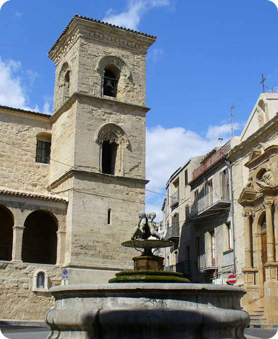

Il centro culturale di Enna
Piazza Francesco Paolo Neglia è una delle piazze più importanti del centro storico della città di Enna. Situata in una posizione centrale lungo una delle vie principali, rappresenta un punto di riferimento per la vita sociale e culturale degli abitanti. La piazza è caratterizzata da uno spazio elegante e raccolto, circondato da edifici storici, negozi e locali che contribuiscono a renderla uno dei luoghi più frequentati della città.
La piazza è dedicata a Francesco Paolo Neglia, musicista e compositore originario di Enna vissuto tra il XIX e il XX secolo. Neglia fu una figura importante per la diffusione della cultura musicale nel territorio siciliano e a lui è intitolato anche il principale teatro cittadino, il Teatro Comunale Francesco Paolo Neglia, che si affaccia proprio sulla piazza.
Questo teatro rappresenta uno dei centri culturali più importanti della città, ospitando spettacoli teatrali, concerti, eventi musicali e manifestazioni culturali che coinvolgono cittadini e visitatori.